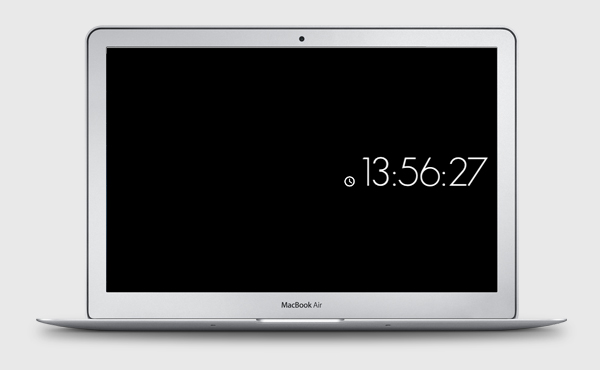

MinimalClock
As the name says, it will show the time.
Really simple, isn't it?
How to install
Simply download, and double click the .exe installer. You can choose whether to display time in the 12h or 24h format in the screensaver configuration window. Have fun!
Versions
V1.0 - First version.